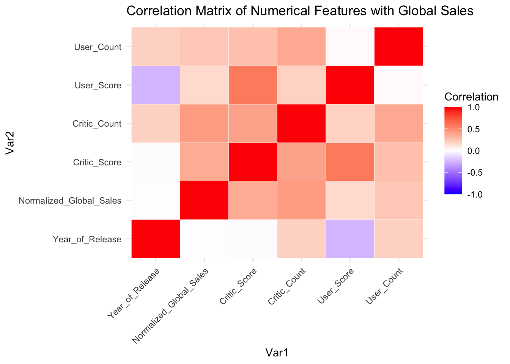
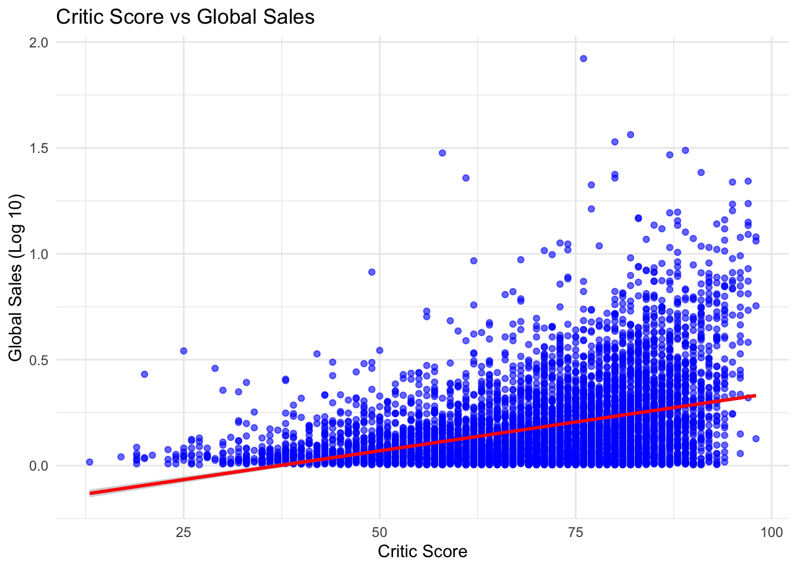
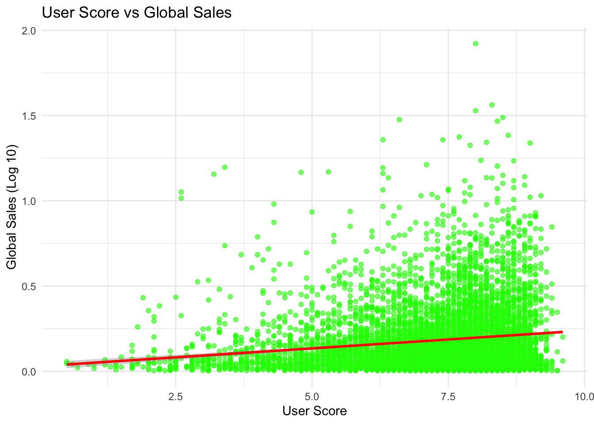
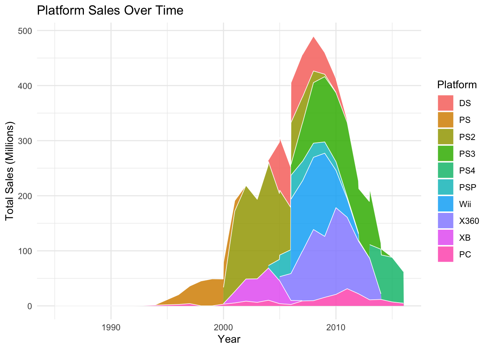
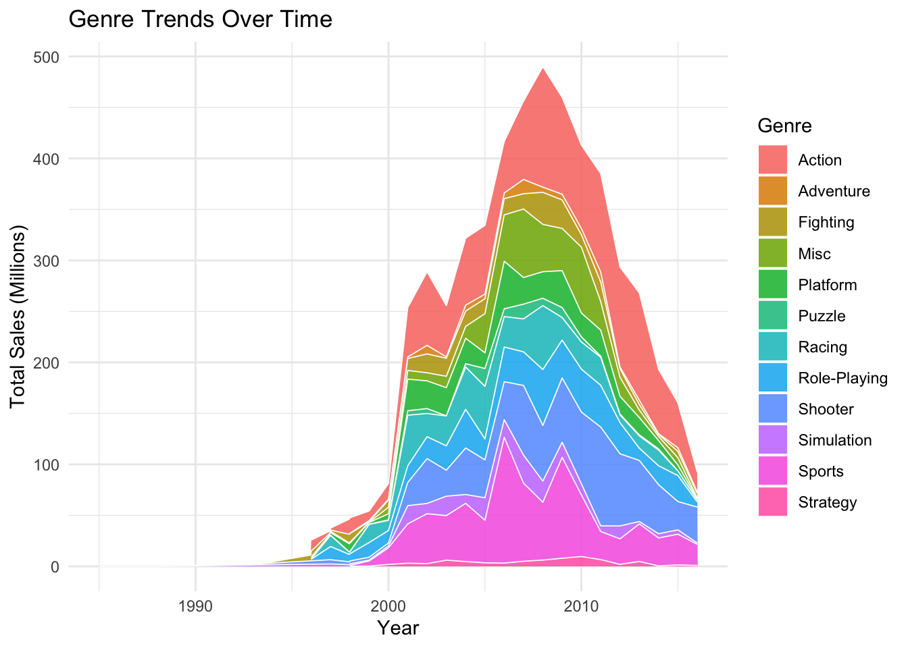

suppressPackageStartupMessages({
suppressWarnings({
library(tidyverse)
library(ggplot2)
library(gridExtra)
library(dplyr)
library(naniar)
library(reshape2)
library(caret)
library(forcats)
library(glmnet)
library(car)
library(patchwork)
library(rpart)
library(rpart.plot)
library(bestNormalize)
})
})Video Game Sales Analysis
Load the Libraries
1. Introduction
The purpose of this analysis is to explore the factors that drive video game sales using various statistical techniques. The study focuses on understanding what influences a game’s long-term success, how ratings impact sales, and how different platforms and genres affect sales patterns.
The analysis leverages multiple regression models, regularization techniques such as ridge and lasso regression for feature selection, and time-series analysis to identify sales trends over time.
Key Objectives: - To determine which factors contribute to a game’s long-term commercial success. - To analyze whether critic ratings or user ratings have a stronger influence on sales. - To examine the impact of game genres on sales stability. - To investigate how platform choices influence a game’s overall success.
The dataset used in this study is a publicly available video game sales dataset, which includes information such as platform, genre, publisher, critic scores, user scores, and sales figures across different regions. The dataset provides historical insights into the video game industry and allows for a detailed exploration of market trends and factors affecting sales performance.
2. Data Preprocessing
2.1 Loading the Data
games <- read.csv("./video_game_sales.csv")
str(games)'data.frame': 16719 obs. of 16 variables:
$ Name : chr "Wii Sports" "Super Mario Bros." "Mario Kart Wii" "Wii Sports Resort" ...
$ Platform : chr "Wii" "NES" "Wii" "Wii" ...
$ Year_of_Release: chr "2006" "1985" "2008" "2009" ...
$ Genre : chr "Sports" "Platform" "Racing" "Sports" ...
$ Publisher : chr "Nintendo" "Nintendo" "Nintendo" "Nintendo" ...
$ NA_Sales : num 41.4 29.1 15.7 15.6 11.3 ...
$ EU_Sales : num 28.96 3.58 12.76 10.93 8.89 ...
$ JP_Sales : num 3.77 6.81 3.79 3.28 10.22 ...
$ Other_Sales : num 8.45 0.77 3.29 2.95 1 0.58 2.88 2.84 2.24 0.47 ...
$ Global_Sales : num 82.5 40.2 35.5 32.8 31.4 ...
$ Critic_Score : int 76 NA 82 80 NA NA 89 58 87 NA ...
$ Critic_Count : int 51 NA 73 73 NA NA 65 41 80 NA ...
$ User_Score : chr "8" "" "8.3" "8" ...
$ User_Count : int 322 NA 709 192 NA NA 431 129 594 NA ...
$ Developer : chr "Nintendo" "" "Nintendo" "Nintendo" ...
$ Rating : chr "E" "" "E" "E" ...summary(games) Name Platform Year_of_Release Genre
Length:16719 Length:16719 Length:16719 Length:16719
Class :character Class :character Class :character Class :character
Mode :character Mode :character Mode :character Mode :character
Publisher NA_Sales EU_Sales JP_Sales
Length:16719 Min. : 0.0000 Min. : 0.000 Min. : 0.0000
Class :character 1st Qu.: 0.0000 1st Qu.: 0.000 1st Qu.: 0.0000
Mode :character Median : 0.0800 Median : 0.020 Median : 0.0000
Mean : 0.2633 Mean : 0.145 Mean : 0.0776
3rd Qu.: 0.2400 3rd Qu.: 0.110 3rd Qu.: 0.0400
Max. :41.3600 Max. :28.960 Max. :10.2200
Other_Sales Global_Sales Critic_Score Critic_Count
Min. : 0.00000 Min. : 0.0100 Min. :13.00 Min. : 3.00
1st Qu.: 0.00000 1st Qu.: 0.0600 1st Qu.:60.00 1st Qu.: 12.00
Median : 0.01000 Median : 0.1700 Median :71.00 Median : 21.00
Mean : 0.04733 Mean : 0.5335 Mean :68.97 Mean : 26.36
3rd Qu.: 0.03000 3rd Qu.: 0.4700 3rd Qu.:79.00 3rd Qu.: 36.00
Max. :10.57000 Max. :82.5300 Max. :98.00 Max. :113.00
NA's :8582 NA's :8582
User_Score User_Count Developer Rating
Length:16719 Min. : 4.0 Length:16719 Length:16719
Class :character 1st Qu.: 10.0 Class :character Class :character
Mode :character Median : 24.0 Mode :character Mode :character
Mean : 162.2
3rd Qu.: 81.0
Max. :10665.0
NA's :9129 2.2 Handling Missing Values
gg_miss_var(games)
games <- na.omit(games)2.3 Feature Engineering
games <- games %>%
mutate(
Year_of_Release = suppressWarnings(as.numeric(as.character(Year_of_Release))),
User_Score = as.numeric(User_Score),
Platform = as.factor(Platform),
Genre = as.factor(Genre),
Publisher = as.factor(Publisher),
Rating = as.factor(Rating)
) %>%
filter(!is.na(Year_of_Release))2.4 Data Transformation
2.4.1 Log Transformation for Global Sales
games$Log_Global_Sales <- log(games$Global_Sales + 1)3. Exploratory Data Analysis (EDA)
3.1 Sales Distribution
To better understand the distribution of Global_Sales, we first plotted its raw values. As shown, the data is highly skewed and long-tailed, with most values clustered near zero and a few extremely large sales figures. To address this skewness, we applied a log₁₀ transformation, which compresses large values and spreads out smaller ones, resulting in a more balanced distribution. Additionally, we used the Yeo-Johnson transformation to further normalize the data and improve its symmetry for modeling purposes.
Yeo-Johnson Transformation
games_yj <- games
yj_transform <- bestNormalize(games_yj$Global_Sales, standardize = FALSE)Warning: `progress_estimated()` was deprecated in dplyr 1.0.0.
ℹ The deprecated feature was likely used in the bestNormalize package.
Please report the issue to the authors.games_yj$Normalized_Global_Sales <- predict(yj_transform)Distribution Plots
p1 <- ggplot(games, aes(x = Global_Sales)) +
geom_histogram(bins = 50, fill = "blue", alpha = 0.7) +
theme_minimal() +
labs(title = "Distribution of Global Sales", x = "Global Sales (Millions)", y = "Count")
games_log <- games
games_log$Log_Global_Sales <- log10(games_log$Global_Sales + 1)
p2 <- ggplot(games_log, aes(x = Log_Global_Sales)) +
geom_histogram(bins = 50, fill = "blue", alpha = 0.7) +
theme_minimal() +
labs(title = "Distribution of Global Sales (Log Scale)", x = "Log10(Global Sales)", y = "Count")
p3 <- ggplot(games_yj, aes(x = Normalized_Global_Sales)) +
geom_histogram(bins = 50, fill = "purple", alpha = 0.7) +
theme_minimal() +
labs(title = "Distribution of Global Sales (Yeo-Johnson)", x = "Yeo-Johnson Transformed Sales", y = "Count")
grid.arrange(p1, p2, p3, ncol = 3)
3.2 Correlation Analysis
numerical_cols <- c("Year_of_Release", "Normalized_Global_Sales", "Critic_Score",
"Critic_Count", "User_Score", "User_Count")
correlation_matrix <- cor(games_yj[, numerical_cols], use = "complete.obs")
correlation_long <- melt(correlation_matrix)
ggplot(correlation_long, aes(x = Var1, y = Var2, fill = value)) +
geom_tile(color = "white") +
scale_fill_gradient2(low = "blue", high = "red", mid = "white",
midpoint = 0, limit = c(-1, 1), space = "Lab",
name = "Correlation") +
theme_minimal() +
labs(title = "Correlation Matrix of Numerical Features with Global Sales") +
theme(axis.text.x = element_text(angle = 45, hjust = 1))
3.3 Scatter Plots: Ratings vs. Sales
ggplot(games_log, aes(x = Critic_Score, y = Log_Global_Sales)) +
geom_point(alpha = 0.6, color = "blue") +
geom_smooth(method = "lm", color = "red") +
theme_minimal() +
labs(title = "Critic Score vs Global Sales", x = "Critic Score", y = "Global Sales (Log 10)")`geom_smooth()` using formula = 'y ~ x'
ggplot(games_log, aes(x = User_Score, y = Log_Global_Sales)) +
geom_point(alpha = 0.6, color = "green") +
geom_smooth(method = "lm", color = "red") +
theme_minimal() +
labs(title = "User Score vs Global Sales", x = "User Score", y = "Global Sales (Log 10)")`geom_smooth()` using formula = 'y ~ x'
3.4 Sales Trends Over Time
yearly_sales <- games %>%
group_by(Year_of_Release) %>%
summarise(Total_Sales = sum(Global_Sales, na.rm = TRUE))
ggplot(yearly_sales, aes(x = Year_of_Release, y = Total_Sales)) +
geom_line(linewidth = 1, color = "blue") +
geom_point(linewidth = 2, color = "red") +
theme_minimal() +
labs(title = "Total Video Game Sales Over Time", x = "Year", y = "Total Sales (Millions)")Warning in geom_point(linewidth = 2, color = "red"): Ignoring unknown
parameters: `linewidth`
in## 3.5 Platform Popularity Over Time
platform_trends <- games %>%
group_by(Year_of_Release, Platform) %>%
summarise(Total_Sales = sum(Global_Sales, na.rm = TRUE)) %>%
filter(!is.na(Year_of_Release))`summarise()` has grouped output by 'Year_of_Release'. You can override using
the `.groups` argument.top_platforms <- platform_trends %>%
group_by(Platform) %>%
summarise(Total_Sales = sum(Total_Sales)) %>%
arrange(desc(Total_Sales)) %>%
dplyr::slice(1:10)
platform_trends_filtered <- platform_trends %>%
filter(Platform %in% top_platforms$Platform) %>%
mutate(Platform = fct_reorder(Platform, Total_Sales, .fun = sum, .desc = TRUE))
ggplot(platform_trends_filtered, aes(x = Year_of_Release, y = Total_Sales, fill = Platform)) +
geom_area(position = "stack", alpha = 0.85, color = "white", size = 0.3) +
theme_minimal() +
labs(title = "Platform Sales Over Time", x = "Year", y = "Total Sales (Millions)")Warning: Using `size` aesthetic for lines was deprecated in ggplot2 3.4.0.
ℹ Please use `linewidth` instead.
3.6 Genre Trends Over Time
genre_trends <- games %>%
group_by(Year_of_Release, Genre) %>%
summarise(Total_Sales = sum(Global_Sales, na.rm = TRUE)) %>%
filter(!is.na(Year_of_Release))`summarise()` has grouped output by 'Year_of_Release'. You can override using
the `.groups` argument.ggplot(genre_trends, aes(x = Year_of_Release, y = Total_Sales, fill = Genre)) +
geom_area(position = "stack", alpha = 0.85, color = "white", size = 0.3) +
theme_minimal() +
labs(title = "Genre Trends Over Time", x = "Year", y = "Total Sales (Millions)")
4. Regression Models
This section evaluates different regression models to understand the factors influencing video game sales. We compare multiple linear regression (MLR), ridge regression, lasso regression, and polynomial regression based on predictive performance, feature importance, and residual analysis.
4.1 Data Preprocessing and Train-Test Split
Before applying regression models, we scale numerical features, encode categorical variables, and split the dataset into training and testing sets.
Preprocessing
We apply one-hot encoding to categorical variables and feature scaling to ensure a normalized input space for regression.
library(dplyr)
games <- read.csv("./video_game_sales.csv") %>% na.omit()
games <- games %>% dplyr::select(-Name, -NA_Sales, -EU_Sales, -JP_Sales, -Other_Sales)
games <- games %>%
mutate(
Year_of_Release = suppressWarnings(as.numeric(as.character(Year_of_Release))),
User_Score = as.numeric(User_Score),
Platform = as.factor(Platform),
Genre = as.factor(Genre),
Publisher = as.factor(Publisher),
Rating = as.factor(Rating),
Log_Global_Sales = log1p(Global_Sales)
) %>%
filter(!is.na(Year_of_Release))
games_encoded <- model.matrix(Log_Global_Sales ~ . - Global_Sales, data = games) %>% as.data.frame()
categorical_cols <- grep("^(Platform|Genre|Publisher|Rating)", colnames(games_encoded), value = TRUE)
games_encoded[categorical_cols] <- lapply(games_encoded[categorical_cols], function(x) as.integer(x > 0))
colnames(games_encoded) <- make.names(colnames(games_encoded), unique = TRUE)
games_encoded$Log_Global_Sales <- log1p(games$Global_Sales)
nzv_cols <- nearZeroVar(games_encoded, saveMetrics = TRUE)
games_encoded <- games_encoded[, !nzv_cols$nzv]
preprocess_model <- preProcess(
games_encoded[, !(colnames(games_encoded) %in% c("Log_Global_Sales"))],
method = c("center", "scale")
)
games_scaled <- games_encoded
games_scaled[, !(colnames(games_scaled) %in% c("Log_Global_Sales"))] <-
predict(preprocess_model, games_encoded[, !(colnames(games_encoded) %in% c("Log_Global_Sales"))])
train_control <- trainControl(method = "cv", number = 10)Train-Test Split
We split the dataset into 80% training and 20% testing for model evaluation.
set.seed(123)
train_index <- createDataPartition(games_scaled$Log_Global_Sales, p = 0.8, list = FALSE)
train_data <- games_scaled[train_index, ]
test_data <- games_scaled[-train_index, ]4.2 Multiple Linear Regression (MLR)
We train a multiple linear regression model as a baseline.
set.seed(123)
mlr_model <- train(
Log_Global_Sales ~ .,
data = train_data,
method = "lm",
trControl = trainControl(method = "cv", number = 10)
)Performance Evaluation
mlr_predictions <- predict(mlr_model, test_data)
# Compute RMSE and R²
mlr_rmse <- sqrt(mean((test_data$Log_Global_Sales - mlr_predictions)^2))
mlr_r2 <- cor(test_data$Log_Global_Sales, mlr_predictions)^2
cat("MLR Test RMSE:", mlr_rmse, "\n")MLR Test RMSE: 0.3596164 cat("MLR Test R²:", mlr_r2, "\n")MLR Test R²: 0.4185609 Residual Analysis
par(mfrow = c(2, 2))
plot(mlr_model$finalModel)The residual diagnostic plots for the Multiple Linear Regression (MLR) model reveal several key issues. The Residuals vs Fitted plot shows a curved pattern, indicating that the linear model does not fully capture the underlying structure, suggesting non-linearity. The Q-Q plot exhibits heavy tails, showing that the residuals deviate from normality. The Scale-Location plot confirms heteroscedasticity, with residual spread increasing as fitted values grow. Finally, the Residuals vs Leverage plot highlights a few influential observations beyond Cook’s distance, suggesting the presence of outliers with high leverage.These patterns suggest that a more flexible or non-linear model may be more appropriate for this data.
4.3 Ridge Regression
Ridge regression applies L2 regularization to shrink coefficients and prevent overfitting.
Model Training & Hyperparameter Tuning
We perform 10-fold cross-validation over a grid of lambda values to identify the optimal regularization strength.
set.seed(123)
x_train_ridge <- as.matrix(train_data[, colnames(train_data) != "Log_Global_Sales"])
y_train_ridge <- train_data$Log_Global_Sales
x_test_ridge <- as.matrix(test_data[, colnames(test_data) != "Log_Global_Sales"])
y_test_ridge <- test_data$Log_Global_Sales
lambda_grid <- 10^seq(2, -2, length = 100)
ridge_model <- train(
Log_Global_Sales ~ .,
data = train_data,
method = "glmnet",
trControl = trainControl(method = "cv", number = 10),
tuneGrid = expand.grid(alpha = 0, lambda = lambda_grid)
)Performance Metrics
ridge_predictions <- predict(ridge_model, newdata = test_data) # Use test_ridge_data instead of x_test
ridge_rmse <- sqrt(mean((test_data$Log_Global_Sales - ridge_predictions)^2))
ridge_r2 <- cor(test_data$Log_Global_Sales, ridge_predictions)^2
cat("Ridge Test RMSE:", ridge_rmse, "\n")Ridge Test RMSE: 0.3606598 cat("Ridge Test R²:", ridge_r2, "\n")Ridge Test R²: 0.4178991 Feature Importance
We extract the coefficients associated with the best lambda to inspect the influence of features.
best_lambda_ridge <- ridge_model$bestTune$lambda
final_ridge <- glmnet(x_train_ridge, y_train_ridge, alpha = 0, lambda = best_lambda_ridge)
ridge_coefs <- coef(final_ridge)
coef_df <- data.frame(
Feature = rownames(ridge_coefs),
Coefficient = as.numeric(ridge_coefs)
)
top_ridge_features <- coef_df %>%
filter(Feature != "(Intercept)") %>%
arrange(desc(abs(Coefficient))) %>%
head(10)
print(top_ridge_features) Feature Coefficient
1 Critic_Count 0.12979907
2 Critic_Score 0.11953295
3 User_Count 0.10464890
4 PlatformPC -0.10464525
5 PlatformXB -0.05683137
6 Year_of_Release -0.04634632
7 PlatformWii 0.04165485
8 PublisherElectronic.Arts 0.03935301
9 PublisherActivision 0.03238862
10 RatingE 0.03103041Residual Analysis
par(mfrow = c(2, 2))
# 1. Residuals vs Fitted
ridge_residuals <- y_test_ridge - ridge_predictions
plot(ridge_predictions, ridge_residuals,
main = "Residuals vs Fitted",
xlab = "Fitted Values (Predicted Sales)",
ylab = "Residuals",
pch = 16, col = "black")
abline(h = 0, col = "red")
# 2. Normal Q-Q
qqnorm(ridge_residuals, main = "Normal Q-Q")
qqline(ridge_residuals, col = "red", lwd = 2)
# 3. Scale-Location Plot
plot(ridge_predictions, sqrt(abs(ridge_residuals)),
main = "Scale-Location",
xlab = "Fitted Values",
ylab = "√|Residuals|",
pch = 16, col = "black")
abline(h = 0, col = "red")
# 4. Residuals vs Leverage
ridge_hatvalues <- hatvalues(lm(y_test_ridge ~ x_test_ridge))
plot(ridge_hatvalues, ridge_residuals,
main = "Residuals vs Leverage",
xlab = "Leverage",
ylab = "Residuals",
pch = 16, col = "black")
abline(h = 0, col = "red")4.4 Lasso Regression
Lasso regression applies L1 regularization, forcing some coefficients to zero, effectively performing feature selection.
Model Training & Hyperparameter Tuning
We perform 10-fold cross-validation over a grid of lambda values to identify the optimal regularization strength for Lasso.
set.seed(123)
x_train_lasso <- x_train_ridge
y_train_lasso <- y_train_ridge
x_test_lasso <- x_test_ridge
y_test_lasso <- y_test_ridge
lambda_grid <- 10^seq(2, -2, length = 100)
lasso_model <- train(
Log_Global_Sales ~ .,
data = train_data,
method = "glmnet",
trControl = trainControl(method = "cv", number = 10),
tuneGrid = expand.grid(alpha = 1, lambda = lambda_grid)
)Warning in nominalTrainWorkflow(x = x, y = y, wts = weights, info = trainInfo,
: There were missing values in resampled performance measures.Performance Metrics
lasso_predictions <- predict(lasso_model, newdata = test_data)
lasso_rmse <- sqrt(mean((y_test_lasso - lasso_predictions)^2))
lasso_r2 <- cor(y_test_lasso, lasso_predictions)^2
cat("Lasso Test RMSE:", lasso_rmse, "\n")Lasso Test RMSE: 0.3634781 cat("Lasso Test R²:", lasso_r2, "\n")Lasso Test R²: 0.4162528 Feature Importance
We extract the top predictors selected by Lasso based on their absolute coefficient values. Features with a coefficient of zero are automatically excluded.
best_lambda_lasso <- lasso_model$bestTune$lambda
final_lasso <- glmnet(x_train_lasso, y_train_lasso, alpha = 1, lambda = best_lambda_lasso)
lasso_coefs <- coef(final_lasso)
coef_df_lasso <- data.frame(
Feature = rownames(lasso_coefs),
Coefficient = as.numeric(lasso_coefs)
)
top_lasso_features <- coef_df_lasso %>%
filter(Feature != "(Intercept)", Coefficient != 0) %>%
arrange(desc(abs(Coefficient))) %>%
head(10)
print(top_lasso_features) Feature Coefficient
1 Critic_Count 0.12306260
2 Critic_Score 0.10472552
3 User_Count 0.09976625
4 PlatformPC -0.09734428
5 PlatformXB -0.04520736
6 RatingE 0.03628584
7 PlatformWii 0.03463733
8 PublisherElectronic.Arts 0.02766028
9 Year_of_Release -0.02716250
10 PublisherActivision 0.02280630Residual Analysis
par(mfrow = c(2, 2))
# 1. Residuals vs Fitted
lasso_residuals <- y_test_lasso - lasso_predictions
plot(lasso_predictions, lasso_residuals,
main = "Residuals vs Fitted",
xlab = "Fitted Values (Predicted Sales)",
ylab = "Residuals",
pch = 16, col = "black")
abline(h = 0, col = "red")
# 2. Normal Q-Q
qqnorm(lasso_residuals, main = "Normal Q-Q")
qqline(lasso_residuals, col = "red", lwd = 2)
# 3. Scale-Location Plot
plot(lasso_predictions, sqrt(abs(lasso_residuals)),
main = "Scale-Location",
xlab = "Fitted Values",
ylab = "√|Residuals|",
pch = 16, col = "black")
abline(h = 0, col = "red")
# 4. Residuals vs Leverage
lasso_hatvalues <- hatvalues(lm(y_test_lasso ~ x_test_lasso))
plot(lasso_hatvalues, lasso_residuals,
main = "Residuals vs Leverage",
xlab = "Leverage",
ylab = "Residuals",
pch = 16, col = "black")
abline(h = 0, col = "red")Lasso regression offers slight improvement over MLR by reducing overfitting and selecting key features, but the diagnostic plots still reveal issues like heteroscedasticity and non-linearity. While performance isn’t significantly better, Lasso and Ridge together help identify the most influential variables. This allows us to explore meaningful interaction terms between top features, which may capture deeper patterns and improve model performance.
4.5 Feature Importance from Ridge & Lasso Regression
To better understand what drives video game sales, we examine the most influential features identified by Ridge and Lasso regression. Ridge retains all features by shrinking their coefficients, while Lasso performs variable selection by reducing some coefficients to zero. Comparing the two highlights both consistently strong predictors and features dropped due to low importance.
ridge_coefs <- as.data.frame(as.matrix(coef(final_ridge)))
ridge_coefs$Feature <- rownames(ridge_coefs)
colnames(ridge_coefs)[1] <- "Coefficient"
lasso_coefs <- as.data.frame(as.matrix(coef(final_lasso)))
lasso_coefs$Feature <- rownames(lasso_coefs)
colnames(lasso_coefs)[1] <- "Coefficient"
ridge_coefs$Model <- "Ridge"
lasso_coefs$Model <- "Lasso"
feature_importance <- rbind(ridge_coefs, lasso_coefs)
feature_importance <- feature_importance %>%
filter(Feature != "(Intercept)") %>%
arrange(desc(abs(Coefficient))) %>%
head(30)
ggplot(feature_importance, aes(x = reorder(Feature, abs(Coefficient)), y = abs(Coefficient), fill = Model)) +
geom_bar(stat = "identity", position = "dodge") +
coord_flip() +
labs(title = "Top Features Influencing Video Game Sales",
x = "Feature", y = "Coefficient Magnitude") +
theme_minimal()4.6 Multiple Linear Regression with Interaction Terms
train_data_interaction <- train_data
test_data_interaction <- test_data
train_data_interaction <- train_data_interaction %>%
mutate(
Critic_Interaction = Critic_Score * Critic_Count,
User_Interaction = User_Score * User_Count,
Critic_User_Score = Critic_Score * User_Score,
Critic_User_Count = Critic_Count * User_Count,
Platform_PC_Year = PlatformPC * Year_of_Release,
Platform_Wii_Year = PlatformWii * Year_of_Release,
Platform_X360_Year = PlatformX360 * Year_of_Release,
Platform_PS3_Year = PlatformPS3 * Year_of_Release,
Genre_Shooter_Critic = GenreShooter * Critic_Score,
Genre_Sports_User = GenreSports * User_Score,
Publisher_EA_Critic = `PublisherElectronic.Arts` * Critic_Score,
Publisher_Ubisoft_User = PublisherUbisoft * User_Score
)
test_data_interaction <- test_data_interaction %>%
mutate(
Critic_Interaction = Critic_Score * Critic_Count,
User_Interaction = User_Score * User_Count,
Critic_User_Score = Critic_Score * User_Score,
Critic_User_Count = Critic_Count * User_Count,
Platform_PC_Year = PlatformPC * Year_of_Release,
Platform_Wii_Year = PlatformWii * Year_of_Release,
Platform_X360_Year = PlatformX360 * Year_of_Release,
Platform_PS3_Year = PlatformPS3 * Year_of_Release,
Genre_Shooter_Critic = GenreShooter * Critic_Score,
Genre_Sports_User = GenreSports * User_Score,
Publisher_EA_Critic = `PublisherElectronic.Arts` * Critic_Score,
Publisher_Ubisoft_User = PublisherUbisoft * User_Score
)set.seed(123)
mlr_interaction_model <- suppressWarnings(train(
Log_Global_Sales ~ .,
data = train_data_interaction,
method = "lm",
trControl = trainControl(method = "cv", number = 10)
))interaction_predictions <- predict(mlr_interaction_model, test_data_interaction)
interaction_rmse <- sqrt(mean((test_data_interaction$Log_Global_Sales - interaction_predictions)^2))
interaction_r2 <- cor(test_data_interaction$Log_Global_Sales, interaction_predictions)^2
cat("Interaction Model Test RMSE:", interaction_rmse, "\n")Interaction Model Test RMSE: 0.3502678 cat("Interaction Model Test R²:", interaction_r2, "\n")Interaction Model Test R²: 0.4487283 par(mfrow = c(2, 2))
plot(mlr_interaction_model$finalModel)The MLR with interaction terms provides a better fit compared to the standard MLR, improving predictive accuracy and capturing some meaningful relationships between features. However, residual patterns still suggest the presence of non-linearity in the data. To address this, we next explore a cubic polynomial regression model to better capture complex patterns and interactions.
Feature Importance Analysis: What Drives Sales?
To better understand the key factors behind video game sales, we analyze the regression coefficients from the Multiple Linear Regression model with interaction terms. This model incorporates both main effects and strategic feature interactions, offering a more nuanced view of how different variables work together to influence sales outcomes.
We visualize the magnitude and direction of each coefficient, highlighting features that are statistically significant (p-value < 0.05). Positive coefficients suggest a direct relationship with sales, while negative ones indicate a potential negative impact.
coefficients_df <- as.data.frame(summary(mlr_interaction_model$finalModel)$coefficients)
colnames(coefficients_df) <- c("Estimate", "Std_Error", "t_value", "P_Value")
coefficients_df$Feature <- rownames(coefficients_df)
rownames(coefficients_df) <- NULL
coefficients_df_filtered <- coefficients_df %>% filter(Feature != "(Intercept)")
coefficients_df_filtered$Significant <- ifelse(coefficients_df_filtered$P_Value < 0.05, "Significant", "Not Significant")
ggplot(coefficients_df_filtered, aes(x = reorder(Feature, Estimate), y = Estimate, fill = Significant)) +
geom_bar(stat = "identity") +
coord_flip() +
geom_hline(yintercept = 0, linetype = "dashed", color = "black") +
scale_fill_manual(values = c("Significant" = "green", "Not Significant" = "red")) +
labs(title = "Feature Importance: Significant (Green) vs. Non-Significant (Red)",
x = "Features", y = "Regression Coefficients") +
theme_minimal()Visualizing the Influence of Ratings
To better understand the interaction, we plot predicted sales against user scores, color-coded by critic scores.
interaction_predictions <- suppressWarnings(predict(mlr_interaction_model, test_data_interaction))
interaction_plot_data <- test_data_interaction %>%
mutate(Predicted_Sales = interaction_predictions) %>%
dplyr::select(User_Score, Critic_Score, Predicted_Sales)
plot1 <- ggplot(interaction_plot_data, aes(x = User_Score, y = Predicted_Sales, color = Critic_Score)) +
geom_point(alpha = 0.6) +
geom_smooth(aes(group = 1), method = "lm", formula = y ~ x, se = FALSE, color = "black") +
scale_color_gradient(low = "blue", high = "red") +
labs(title = "Critic Score vs. User Score",
x = "User Score", y = "Predicted Log Sales",
color = "Critic Score") +
theme_minimal() +
theme(plot.title = element_text(size = 14, face = "bold", hjust = 0.5))
plot2 <- ggplot(interaction_plot_data, aes(x = Critic_Score, y = Predicted_Sales, color = User_Score)) +
geom_point(alpha = 0.6) +
geom_smooth(aes(group = 1), method = "lm", formula = y ~ x, se = FALSE, color = "black") +
scale_color_gradient(low = "purple", high = "orange") +
labs(title = "User Score vs. Critic Score",
x = "Critic Score", y = "Predicted Log Sales",
color = "User Score") +
theme_minimal() +
theme(plot.title = element_text(size = 14, face = "bold", hjust = 0.5))
combined_plot <- (plot1 + plot2) +
plot_annotation(title = "Interaction Effects: Critic Score & User Score",
theme = theme(plot.title = element_text(size = 16, face = "bold", hjust = 0.5)))
print(combined_plot)4.7 Polynomial Regression
Polynomial regression enhances linear regression by introducing higher-degree terms, enabling the model to capture complex, non-linear relationships in the data.
In this analysis, we generate polynomial features up to degree 3 (cubic terms) for key predictors to better model intricate sales patterns.
library(polycor)
library(caret)
poly_features <- c("Critic_Score", "User_Score", "Critic_Count", "User_Count")
train_data_poly <- train_data_interaction
test_data_poly <- test_data_interaction
for (feature in poly_features) {
train_data_poly[[paste0(feature, "_sq")]] <- train_data[[feature]]^2
test_data_poly[[paste0(feature, "_sq")]] <- test_data[[feature]]^2
train_data_poly[[paste0(feature, "_cub")]] <- train_data[[feature]]^3
test_data_poly[[paste0(feature, "_cub")]] <- test_data[[feature]]^3
}
set.seed(123)
poly_model <- train(
Log_Global_Sales ~ .,
data = train_data_poly,
method = "lm",
trControl = trainControl(method = "cv", number = 10)
)Performance Evaluation
poly_predictions <- predict(poly_model, test_data_poly)
poly_rmse <- sqrt(mean((test_data_poly$Log_Global_Sales - poly_predictions)^2))
poly_r2 <- cor(test_data_poly$Log_Global_Sales, poly_predictions)^2
cat("Polynomial Regression (Degree 3) Test RMSE:", poly_rmse, "\n")Polynomial Regression (Degree 3) Test RMSE: 0.3335361 cat("Polynomial Regression (Degree 3) Test R²:", poly_r2, "\n")Polynomial Regression (Degree 3) Test R²: 0.5009479 Residual Analysis
par(mfrow = c(2, 2))
plot(poly_model$finalModel)This diagnostic plot for the Polynomial Regression model shows clear improvements over previous models. The residuals are more symmetrically distributed and show less curvature, indicating better model fit. The Q-Q plot aligns more closely with the normal line, suggesting improved normality. The scale-location plot reveals more stable variance, and although a few high-leverage points remain, their influence appears reduced. Compared to MLR, Ridge, and Lasso, the polynomial model better captures non-linearity and reduces heteroscedasticity, making it the strongest model so far—though some outliers and variance issues still persist.
4.8 Regressions summary
regression_results <- data.frame(
Model = c("Standard MLR", "MLR with Interactions","Ridge Regression", "Lasso Regression", "Polynomial Regression"),
RMSE = c(mlr_rmse, interaction_rmse, ridge_rmse, lasso_rmse, poly_rmse),
R2 = c(mlr_r2, interaction_r2, ridge_r2, lasso_r2, poly_r2)
)
print(regression_results) Model RMSE R2
1 Standard MLR 0.3596164 0.4185609
2 MLR with Interactions 0.3502678 0.4487283
3 Ridge Regression 0.3606598 0.4178991
4 Lasso Regression 0.3634781 0.4162528
5 Polynomial Regression 0.3335361 0.5009479Among the regression models tested, Polynomial Regression outperforms the rest with the lowest RMSE and highest R², effectively capturing non-linear patterns in video game sales. MLR with Interaction Terms comes next, improving over Standard MLR by incorporating meaningful feature interactions, especially between critic/user metrics and platform/time dynamics. Standard MLR provides a reasonable baseline but fails to account for more complex relationships. Ridge and Lasso Regression perform similarly to the baseline, with Lasso slightly underperforming due to feature selection. While regularization models help identify important predictors, their predictive accuracy remains limited compared to polynomial approaches.
5. Classification Models
5.1 Motivation and Overview
While regression models provided useful insights, the highest R² reached only around 50%, meaning a large portion of the variance in video game sales remained unexplained. To complement the regression analysis and gain a broader perspective, we turn to classification models.
Instead of predicting exact sales numbers, classification allows us to group games into performance tiers, making it easier to analyze patterns and extract actionable insights.
We define three Sales Categories:
- Low Sales: Less than 0.5 million units
- Moderate Sales: Between 0.5 and 2 million units
- High Sales: More than 2 million units
To predict these categories, we apply and compare three supervised learning models:
- Decision Tree: A simple, interpretable baseline model.
- Random Forest: An ensemble of decision trees to improve accuracy and reduce overfitting.
- XGBoost: A powerful boosting-based model known for its performance and feature importance insights.
5.2 Classification Model: Decision Tree
We define the following three Sales Categories based on Global_Sales:
- Low Sales: Less than 0.5 million units
- Moderate Sales: Between 0.5 and 2 million units
- High Sales: More than 2 million units
Interaction terms previously found important in regression models are included to enhance classification accuracy.
Model Training
library(rpart)
library(rpart.plot)
library(dplyr)
train_data_interaction_copy <- train_data_interaction
test_data_interaction_copy <- test_data_interaction
train_data_interaction_copy$Sales_Category <- cut(train_data_interaction_copy$Log_Global_Sales,
breaks = c(-Inf, log1p(0.5), log1p(2), Inf),
labels = c("Low", "Moderate", "High"))
test_data_interaction_copy$Sales_Category <- cut(test_data_interaction_copy$Log_Global_Sales,
breaks = c(-Inf, log1p(0.5), log1p(2), Inf),
labels = c("Low", "Moderate", "High"))
train_data_interaction_copy$Sales_Category <- as.factor(train_data_interaction_copy$Sales_Category)
test_data_interaction_copy$Sales_Category <- as.factor(test_data_interaction_copy$Sales_Category)
train_data_interaction_copy <- dplyr::select(train_data_interaction_copy, -Log_Global_Sales)
test_data_interaction_copy <- dplyr::select(test_data_interaction_copy, -Log_Global_Sales)
set.seed(123)
genre_tree_interaction <- rpart(Sales_Category ~ .,
data = train_data_interaction_copy,
method = "class")
rpart.plot(genre_tree_interaction, type = 3, extra = 101)Model Evaluation
test_data_interaction_copy$Sales_Category <- factor(test_data_interaction_copy$Sales_Category,
levels = levels(train_data_interaction_copy$Sales_Category))
predicted_categories <- predict(genre_tree_interaction, test_data_interaction_copy, type = "class")
predicted_categories <- factor(predicted_categories,
levels = levels(test_data_interaction_copy$Sales_Category))
conf_matrix <- table(Predicted = predicted_categories, Actual = test_data_interaction_copy$Sales_Category)
print(conf_matrix) Actual
Predicted Low Moderate High
Low 772 217 11
Moderate 103 167 74
High 1 7 25accuracy <- sum(diag(conf_matrix)) / sum(conf_matrix)
cat("Model Accuracy:", round(accuracy * 100, 2), "%\n")Model Accuracy: 70.01 %classification_report <- confusionMatrix(predicted_categories, test_data_interaction_copy$Sales_Category)
precision <- classification_report$byClass[, "Precision"]
recall <- classification_report$byClass[, "Recall"]
f1_score <- classification_report$byClass[, "F1"]
cat("\nPrecision (by class):\n")
Precision (by class):print(precision) Class: Low Class: Moderate Class: High
0.7720000 0.4854651 0.7575758 cat("\nRecall (by class):\n")
Recall (by class):print(recall) Class: Low Class: Moderate Class: High
0.8812785 0.4271100 0.2272727 cat("\nF1-Score (by class):\n")
F1-Score (by class):print(f1_score) Class: Low Class: Moderate Class: High
0.8230277 0.4544218 0.3496503 The Decision Tree classifier achieved an overall accuracy of 70%, with particularly strong performance in identifying low sales games. It demonstrated high recall (88%) and solid precision (77%) for the Low category, meaning it correctly identified most games with poor sales. However, the model struggled with the Moderate and High categories. Precision and recall were lower for Moderate sales, and recall was especially poor for High sales games (only ~23%), indicating many were misclassified. While the model captures clear signals for underperforming titles, it has difficulty distinguishing between moderate and high performers.
5.3 Classification Model: Predicting Sales with Random Forest
To enhance predictive accuracy and assess the impact of various factors on sales stability, we train a Random Forest classifier.
Sales are categorized into three groups:
- Low Sales (< 0.5M units)
- Moderate Sales (0.5M - 2M units)
- High Sales (> 2M units)
Unlike decision trees, Random Forest aggregates multiple decision trees to reduce overfitting and improve generalization.
suppressPackageStartupMessages({
library(randomForest)
library(dplyr)
library(caret)
})
common_features <- setdiff(intersect(colnames(train_data_interaction), colnames(test_data_interaction)), "Log_Global_Sales")
train_data_rf <- train_data_interaction[, c(common_features, "Log_Global_Sales")]
test_data_rf <- test_data_interaction[, c(common_features, "Log_Global_Sales")]
train_data_rf$Sales_Category <- cut(train_data_rf$Log_Global_Sales,
breaks = c(-Inf, log1p(0.5), log1p(2), Inf),
labels = c("Low", "Moderate", "High"))
test_data_rf$Sales_Category <- cut(test_data_rf$Log_Global_Sales,
breaks = c(-Inf, log1p(0.5), log1p(2), Inf),
labels = c("Low", "Moderate", "High"))
train_data_rf$Sales_Category <- as.factor(train_data_rf$Sales_Category)
test_data_rf$Sales_Category <- as.factor(test_data_rf$Sales_Category)
train_data_rf <- dplyr::select(train_data_rf, -Log_Global_Sales)
test_data_rf <- dplyr::select(test_data_rf, -Log_Global_Sales)
set.seed(123)
rf_interaction <- randomForest(Sales_Category ~ .,
data = train_data_rf,
ntree = 500,
importance = TRUE)library(ggplot2)
library(dplyr)
importance_df <- as.data.frame(importance(rf_interaction))
importance_df$Feature <- rownames(importance_df)
importance_long <- importance_df %>%
dplyr::select(Feature, MeanDecreaseAccuracy, MeanDecreaseGini) %>%
tidyr::pivot_longer(cols = c(MeanDecreaseAccuracy, MeanDecreaseGini),
names_to = "Metric", values_to = "Importance")
ggplot(importance_long, aes(x = reorder(Feature, Importance), y = Importance, fill = Metric)) +
geom_bar(stat = "identity", position = "dodge") +
coord_flip() +
labs(title = "Feature Importance in Random Forest",
x = "Features",
y = "Importance Score",
fill = "Metric") +
theme_minimal()Model Evaluation on Test Data
library(caret)
test_data_interaction_copy$Sales_Category <- factor(test_data_interaction_copy$Sales_Category,
levels = levels(train_data_interaction_copy$Sales_Category))
predicted_categories_rf <- predict(rf_interaction, test_data_interaction_copy)
predicted_categories_rf <- factor(predicted_categories_rf,
levels = levels(test_data_interaction_copy$Sales_Category))
conf_matrix_rf <- table(Predicted = predicted_categories_rf, Actual = test_data_interaction_copy$Sales_Category)
print(conf_matrix_rf) Actual
Predicted Low Moderate High
Low 804 206 14
Moderate 71 174 49
High 1 11 47accuracy_rf <- sum(diag(conf_matrix_rf)) / sum(conf_matrix_rf)
cat("Model Accuracy:", round(accuracy_rf * 100, 2), "%\n")Model Accuracy: 74.44 %classification_report_rf <- confusionMatrix(predicted_categories_rf, test_data_interaction_copy$Sales_Category)
precision_rf <- classification_report_rf$byClass[, "Precision"]
recall_rf <- classification_report_rf$byClass[, "Recall"]
f1_score_rf <- classification_report_rf$byClass[, "F1"]
cat("\nPrecision (by class):\n")
Precision (by class):print(precision_rf) Class: Low Class: Moderate Class: High
0.7851562 0.5918367 0.7966102 cat("\nRecall (by class):\n")
Recall (by class):print(recall_rf) Class: Low Class: Moderate Class: High
0.9178082 0.4450128 0.4272727 cat("\nF1-Score (by class):\n")
F1-Score (by class):print(f1_score_rf) Class: Low Class: Moderate Class: High
0.8463158 0.5080292 0.5562130 The Random Forest classifier outperformed the Decision Tree in overall accuracy, achieving 74.4% compared to the Decision Tree’s 70%. It also showed stronger precision across all classes, especially for predicting high sales, where it notably improved from 0.76 to 0.80. However, recall for high and moderate sales remained moderate, meaning the model still struggles to fully capture those categories. Overall, Random Forest offers better generalization and balance between precision and recall, making it a more reliable model than a single Decision Tree for predicting sales categories.
5.4 Classification Model: Predicting Sales with XGBoost
To enhance the predictive performance of our sales classification model, we implement XGBoost (Extreme Gradient Boosting), a powerful machine learning algorithm that improves upon traditional decision trees by iteratively optimizing weak learners. Unlike Random Forest, which builds independent trees, XGBoost corrects misclassifications at each step, making it more effective in handling imbalanced data and complex relationships.
Model Training
suppressWarnings(library(xgboost))
Attaching package: 'xgboost'The following object is masked from 'package:dplyr':
slicelibrary(caret)
library(dplyr)
common_features <- setdiff(intersect(colnames(train_data_interaction_copy), colnames(test_data_interaction_copy)), "Log_Global_Sales")
train_data_xgb <- train_data_interaction_copy
test_data_xgb <- test_data_interaction_copy
train_data_xgb$Sales_Category <- as.numeric(factor(train_data_xgb$Sales_Category, levels = c("Low", "Moderate", "High"))) - 1
test_data_xgb$Sales_Category <- as.numeric(factor(test_data_xgb$Sales_Category, levels = c("Low", "Moderate", "High"))) - 1
feature_cols <- setdiff(common_features, "Sales_Category")
dtrain <- xgb.DMatrix(data = as.matrix(train_data_xgb[, feature_cols]), label = train_data_xgb$Sales_Category)
dtest <- xgb.DMatrix(data = as.matrix(test_data_xgb[, feature_cols]), label = test_data_xgb$Sales_Category)
params <- list(
objective = "multi:softmax",
num_class = 3,
eval_metric = "mlogloss",
eta = 0.1,
max_depth = 6,
subsample = 0.8,
colsample_bytree = 0.8
)
set.seed(123)
xgb_model <- xgb.train(params = params, data = dtrain, nrounds = 300, watchlist = list(train = dtrain), verbose = 0)Feature Importance Analysis
To understand which factors contribute most to game sales classification, we analyze feature importance scores generated by XGBoost.
importance_matrix <- xgb.importance(feature_names = feature_cols, model = xgb_model)
ggplot(importance_matrix, aes(x = reorder(Feature, Gain), y = Gain, fill = Feature)) +
geom_bar(stat = "identity") +
coord_flip() +
labs(title = "Feature Importance in XGBoost",
x = "Features",
y = "Importance Score") +
theme_minimal() +
theme(legend.position = "none") Model Evaluation
We evaluate XGBoost’s performance using accuracy, precision, recall, and F1-score to compare it with previous models.
predicted_categories_xgb <- predict(xgb_model, dtest)
predicted_categories_xgb <- factor(predicted_categories_xgb, levels = c(0, 1, 2), labels = c("Low", "Moderate", "High"))
test_data_xgb$Sales_Category <- factor(test_data_xgb$Sales_Category, levels = c(0, 1, 2), labels = c("Low", "Moderate", "High"))
conf_matrix_xgb <- table(Predicted = predicted_categories_xgb, Actual = test_data_xgb$Sales_Category)
print(conf_matrix_xgb) Actual
Predicted Low Moderate High
Low 799 169 14
Moderate 75 200 38
High 2 22 58accuracy_xgb <- sum(diag(conf_matrix_xgb)) / sum(conf_matrix_xgb)
cat("XGBoost Model Accuracy:", round(accuracy_xgb * 100, 2), "%\n")XGBoost Model Accuracy: 76.76 %classification_report_xgb <- confusionMatrix(predicted_categories_xgb, test_data_xgb$Sales_Category)
precision_xgb <- classification_report_xgb$byClass[, "Precision"]
recall_xgb <- classification_report_xgb$byClass[, "Recall"]
f1_score_xgb <- classification_report_xgb$byClass[, "F1"]
cat("\nPrecision (by class):\n")
Precision (by class):print(precision_xgb) Class: Low Class: Moderate Class: High
0.8136456 0.6389776 0.7073171 cat("\nRecall (by class):\n")
Recall (by class):print(recall_xgb) Class: Low Class: Moderate Class: High
0.9121005 0.5115090 0.5272727 cat("\nF1-Score (by class):\n")
F1-Score (by class):print(f1_score_xgb) Class: Low Class: Moderate Class: High
0.8600646 0.5681818 0.6041667 The XGBoost classifier outperforms both the Decision Tree and Random Forest models, achieving the highest overall accuracy. It demonstrates strong precision and recall for the Low Sales category, and notably better performance for Moderate and High Sales classes compared to earlier models. While it still struggles somewhat with recall on high sales predictions, its improved balance across all classes—especially evident in F1-scores—shows that XGBoost is more effective at capturing complex patterns in the data. This makes it a strong candidate for predicting sales categories in a multi-class setting.
5.5 Insights from SHAP Analysis: What Drives Sales?
To complement our regression and classification models, we leveraged SHAP (SHapley Additive exPlanations) to gain deeper, model-agnostic insights into how different features influence game sales. This section visualizes those impacts across genres, platforms, publishers, and over time — revealing patterns that might not be obvious from raw performance metrics alone.
Below are some questions and insights raised from the SHAP visualizations:
How do critic and user reviews influence game sales across different genres?
library(SHAPforxgboost)
test_data_xgb_copy <- test_data_xgb
genre_cols <- c("GenreFighting", "GenreMisc", "GenrePlatform",
"GenreRacing", "GenreRole.Playing", "GenreShooter", "GenreSports")
test_data_xgb_copy[genre_cols] <- lapply(test_data_xgb_copy[genre_cols], as.numeric)
test_data_xgb_copy$Genre <- apply(test_data_xgb_copy[genre_cols], 1, function(row) {
selected_genres <- genre_cols[row > 0]
selected_genres <- gsub("Genre", "", selected_genres)
if (length(selected_genres) > 0) {
paste(selected_genres, collapse = ", ")
} else {
"Other"
}
})
X_test_matrix <- as.matrix(test_data_xgb[, feature_cols])
params_shap <- params
params_shap$objective <- "multi:softprob"
xgb_model_shap <- xgb.train(params = params_shap,
data = dtrain,
nrounds = 300,
watchlist = list(train = dtrain),
verbose = 0)
shap_contrib <- predict(xgb_model_shap, newdata = dtest, predcontrib = TRUE)
shap_values_df <- as.data.frame(shap_contrib)
shap_values_df$BIAS <- NULL
shap_values_df$Genre <- test_data_xgb_copy$Genre
shap_genre <- shap_values_df %>%
group_by(Genre) %>%
summarise(
Mean_Critic_Score_Impact = mean(Critic_Score, na.rm = TRUE),
Mean_User_Score_Impact = mean(User_Score, na.rm = TRUE),
Mean_Critic_Interaction = mean(Critic_Interaction, na.rm = TRUE),
Mean_User_Interaction = mean(User_Interaction, na.rm = TRUE)
)
shap_genre_long <- shap_genre %>%
pivot_longer(cols = -Genre, names_to = "Feature", values_to = "Mean_Impact")
ggplot(shap_genre_long, aes(x = Genre, y = Mean_Impact, fill = Feature)) +
geom_bar(stat = "identity", position = "dodge") +
labs(title = "Impact of Critic & User Reviews by Genre (SHAP - XGBoost)",
x = "Game Genre", y = "Mean SHAP Value",
fill = "Feature") +
theme_minimal() +
theme(axis.text.x = element_text(angle = 45, hjust = 1))
This plot highlights how review-related features contribute differently across genres. In genres like Fighting, Misc, and Racing, critic interactions (Critic Score × Critic Count) show strong positive SHAP values, indicating that professional reviews heavily drive sales. In contrast, Sports games are negatively impacted by critic interactions, suggesting that critical evaluations may hurt their performance, possibly due to repetitive releases. User interaction has moderate influence in genres such as Platform and Shooter, hinting that player feedback and community response matter more in those spaces. The combined presence of user and critic signals across genres like Shooter reflects a balanced influence, where both expert reviews and player opinions help shape sales outcomes.
Which platforms are more influenced by critic and user reviews when it comes to sales performance?
library(SHAPforxgboost)
params_shap <- params
params_shap$objective <- "multi:softprob"
xgb_model_shap <- xgb.train(params = params_shap,
data = dtrain,
nrounds = 300,
verbose = 0)
shap_contrib <- predict(xgb_model_shap, newdata = dtest, predcontrib = TRUE)
shap_values_df <- as.data.frame(shap_contrib)
shap_values_df$BIAS <- NULL
test_data_xgb_copy <- test_data_xgb
platform_cols <- c("PlatformDS", "PlatformGC", "PlatformPC", "PlatformPS2", "PlatformPS3",
"PlatformPSP", "PlatformWii", "PlatformX360", "PlatformXB")
test_data_xgb_copy[platform_cols] <- lapply(test_data_xgb_copy[platform_cols], as.numeric)
test_data_xgb_copy$Platform <- apply(test_data_xgb_copy[platform_cols], 1, function(row) {
selected_platforms <- platform_cols[row > 0]
selected_platforms <- gsub("Platform", "", selected_platforms)
if (length(selected_platforms) > 0) {
paste(selected_platforms, collapse = ", ")
} else {
"Other"
}
})
shap_values_df$Platform <- test_data_xgb_copy$Platform
library(dplyr)
library(tidyr)
library(ggplot2)
shap_platform <- shap_values_df %>%
group_by(Platform) %>%
summarise(
Mean_Critic_Score_Impact = mean(Critic_Score, na.rm = TRUE),
Mean_User_Score_Impact = mean(User_Score, na.rm = TRUE),
Mean_Critic_Interaction = mean(Critic_Interaction, na.rm = TRUE),
Mean_User_Interaction = mean(User_Interaction, na.rm = TRUE)
)
shap_platform_long <- shap_platform %>%
pivot_longer(cols = -Platform, names_to = "Feature", values_to = "Mean_Impact")
ggplot(shap_platform_long, aes(x = Platform, y = Mean_Impact, fill = Feature)) +
geom_bar(stat = "identity", position = "dodge") +
labs(title = "Impact of Critic & User Reviews by Platform",
x = "Game Platform", y = "Mean SHAP Value",
fill = "Feature") +
theme_minimal() +
theme(axis.text.x = element_text(angle = 45, hjust = 1))Critic reviews have a particularly strong impact on platforms like Wii and DS, where critic score interactions dominate. PC and X360 show a weaker or even negative critic influence, suggesting user feedback may be more relevant there. User interaction contributes moderately across platforms but plays a stronger role on XB and GC, highlighting platform-specific differences in how players and critics drive sales.
How has the importance of different game genres in predicting sales changed over time?
library(dplyr)
library(tidyr)
library(ggplot2)
library(zoo)
Attaching package: 'zoo'The following objects are masked from 'package:base':
as.Date, as.Date.numericlibrary(SHAPforxgboost)
params$objective <- "multi:softprob"
xgb_model_shap <- xgb.train(params = params,
data = dtrain,
nrounds = 300,
verbose = 0)
shap_contrib <- predict(xgb_model_shap, newdata = dtest, predcontrib = TRUE)
shap_values_df <- as.data.frame(shap_contrib)
shap_values_df$BIAS <- NULL
test_data_xgb_copy <- test_data_xgb
test_data_xgb_copy <- test_data_xgb_copy %>%
filter(!is.na(Year_of_Release)) %>%
mutate(Year_of_Release = as.numeric(Year_of_Release))
year_mean <- preprocess_model$mean["Year_of_Release"]
year_sd <- preprocess_model$std["Year_of_Release"]
test_data_xgb_copy$Year_of_Release <- test_data_xgb_copy$Year_of_Release * year_sd + year_mean
genre_cols <- c("GenreFighting", "GenreMisc", "GenrePlatform",
"GenreRacing", "GenreRole.Playing", "GenreShooter", "GenreSports")
test_data_xgb_copy$Genre <- apply(test_data_xgb_copy[genre_cols], 1, function(row) {
selected_genres <- genre_cols[row > 0]
selected_genres <- gsub("Genre", "", selected_genres)
if (length(selected_genres) > 0) {
paste(selected_genres, collapse = ", ")
} else {
"Other"
}
})
shap_values_df$Genre <- test_data_xgb_copy$Genre
shap_values_df$Year_of_Release <- test_data_xgb_copy$Year_of_Release
shap_genre_time <- shap_values_df %>%
group_by(Year_of_Release, Genre) %>%
summarise(
Mean_Genre_Impact = mean(Genre_Shooter_Critic, na.rm = TRUE)
) %>%
filter(!is.na(Year_of_Release) & !is.na(Genre))`summarise()` has grouped output by 'Year_of_Release'. You can override using
the `.groups` argument.top_genres <- shap_genre_time %>%
group_by(Genre) %>%
summarise(Mean_Impact = mean(Mean_Genre_Impact, na.rm = TRUE)) %>%
top_n(4, Mean_Impact) %>%
pull(Genre)
shap_genre_time <- shap_genre_time %>%
filter(Genre %in% top_genres)
shap_genre_time_long <- shap_genre_time %>%
pivot_longer(cols = -c(Year_of_Release, Genre), names_to = "Feature", values_to = "Mean_Impact") %>%
filter(!is.na(Mean_Impact) & !is.infinite(Mean_Impact)) %>%
arrange(Genre, Year_of_Release) %>%
group_by(Genre) %>%
mutate(Smoothed_Impact = rollmean(Mean_Impact, k = 3, fill = NA, align = "center")) %>%
ungroup()
ggplot(shap_genre_time_long, aes(x = Year_of_Release, y = Mean_Impact, color = Genre, group = Genre)) +
geom_line(size = 1, alpha = 0.8) +
geom_point(size = 2, alpha = 0.6) +
geom_smooth(aes(y = Smoothed_Impact), method = "loess", se = FALSE,
linetype = "dashed", size = 1.2, alpha = 0.5) +
scale_x_continuous(
breaks = seq(min(shap_genre_time_long$Year_of_Release, na.rm = TRUE),
max(shap_genre_time_long$Year_of_Release, na.rm = TRUE), by = 2),
labels = function(x) format(round(x), nsmall = 0)
) +
labs(
title = "Evolution of Genre Importance in Predicting Game Sales",
subtitle = "Tracking SHAP Value Trends for Top 4 Genres Over Time (Smoothed Trends)",
x = "Year of Release",
y = "Mean SHAP Value (Genre Impact)",
color = "Genre"
) +
theme_minimal() +
theme(
axis.text.x = element_text(angle = 45, hjust = 1, size = 10),
axis.text.y = element_text(size = 12),
legend.position = "right",
legend.title = element_text(size = 12),
legend.text = element_text(size = 10),
plot.title = element_text(size = 16, face = "bold"),
plot.subtitle = element_text(size = 12, face = "italic")
)`geom_smooth()` using formula = 'y ~ x'Warning: Removed 8 rows containing non-finite outside the scale range
(`stat_smooth()`).The Shooter genre had the strongest influence on game sales in the early 2000s, with consistently high SHAP values until around 2010, after which its impact gradually declined. Other genres like Platform, Misc, and Fighting remained relatively stable and less influential throughout the years, suggesting that the market became more diverse or less genre-driven over time.
How did the influence of major publishers on game sales evolve over the years?
library(dplyr)
library(tidyr)
library(ggplot2)
library(zoo)
library(SHAPforxgboost)
params$objective <- "multi:softprob"
xgb_model_shap <- xgb.train(params = params,
data = dtrain,
nrounds = 300,
verbose = 0)
shap_contrib <- predict(xgb_model_shap, newdata = dtest, predcontrib = TRUE)
shap_values_df <- as.data.frame(shap_contrib)
shap_values_df$BIAS <- NULL
test_data_xgb_copy <- test_data_xgb
test_data_xgb_copy <- test_data_xgb_copy %>%
filter(!is.na(Year_of_Release)) %>%
mutate(Year_of_Release = as.numeric(Year_of_Release))
year_mean <- preprocess_model$mean["Year_of_Release"]
year_sd <- preprocess_model$std["Year_of_Release"]
test_data_xgb_copy$Year_of_Release <- test_data_xgb_copy$Year_of_Release * year_sd + year_mean
publisher_cols <- c("PublisherActivision", "PublisherElectronic.Arts", "PublisherUbisoft")
test_data_xgb_copy[publisher_cols] <- lapply(test_data_xgb_copy[publisher_cols], as.numeric)
test_data_xgb_copy$Publisher <- apply(test_data_xgb_copy[publisher_cols], 1, function(row) {
selected_publishers <- publisher_cols[row > 0]
selected_publishers <- gsub("Publisher", "", selected_publishers)
if (length(selected_publishers) > 0) {
paste(selected_publishers, collapse = ", ")
} else {
"Other"
}
})
test_data_xgb_copy <- test_data_xgb_copy %>%
filter(!is.na(Publisher))
shap_values_df$Publisher <- test_data_xgb_copy$Publisher
shap_values_df$Year_of_Release <- test_data_xgb_copy$Year_of_Release
shap_publisher_time <- shap_values_df %>%
group_by(Year_of_Release, Publisher) %>%
summarise(
Mean_Publisher_Impact = mean(Publisher_EA_Critic, na.rm = TRUE) # Use a publisher-related SHAP value
) %>%
filter(!is.na(Year_of_Release) & !is.na(Publisher)) # Remove missing values`summarise()` has grouped output by 'Year_of_Release'. You can override using
the `.groups` argument.selected_publishers <- c("Activision", "Electronic.Arts", "Ubisoft")
shap_publisher_time <- shap_publisher_time %>%
filter(Publisher %in% selected_publishers)
shap_publisher_time_long <- shap_publisher_time %>%
pivot_longer(cols = -c(Year_of_Release, Publisher), names_to = "Feature", values_to = "Mean_Impact")
shap_publisher_time_long <- shap_publisher_time_long %>%
filter(!is.na(Mean_Impact) & !is.infinite(Mean_Impact))
shap_publisher_time_long <- shap_publisher_time_long %>%
arrange(Publisher, Year_of_Release) %>%
group_by(Publisher) %>%
mutate(Smoothed_Impact = rollmean(Mean_Impact, k = 3, fill = NA, align = "center")) %>%
ungroup()
ggplot(shap_publisher_time_long, aes(x = Year_of_Release, y = Mean_Impact, color = Publisher, group = Publisher)) +
geom_line(size = 1, alpha = 0.8) +
geom_point(size = 2, alpha = 0.6) +
geom_smooth(aes(y = Smoothed_Impact), method = "loess", se = FALSE, linetype = "dashed", size = 1.2, alpha = 0.5) +
scale_x_continuous(breaks = seq(min(shap_publisher_time_long$Year_of_Release, na.rm = TRUE),
max(shap_publisher_time_long$Year_of_Release, na.rm = TRUE), by = 2)) +
labs(
title = "Evolution of Publisher Influence on Game Sales",
subtitle = "Tracking SHAP Value Trends for Major Publishers Over Time",
x = "Year of Release",
y = "Mean SHAP Value (Publisher Impact)",
color = "Publisher"
) +
theme_minimal() +
theme(
axis.text.x = element_text(angle = 45, hjust = 1, size = 10),
axis.text.y = element_text(size = 12),
legend.position = "right",
legend.title = element_text(size = 12),
legend.text = element_text(size = 10),
plot.title = element_text(size = 16, face = "bold"),
plot.subtitle = element_text(size = 12, face = "italic")
)`geom_smooth()` using formula = 'y ~ x'Warning: Removed 6 rows containing non-finite outside the scale range
(`stat_smooth()`).Ubisoft and Activision maintained consistently positive influence on sales, indicating their strong market presence. In contrast, Electronic Arts (EA) showed a negative SHAP impact across most years, suggesting its games were less associated with strong sales performance despite its size—highlighting a potential gap between popularity and performance.
Which genres are most successful on specific platforms based on SHAP impact?
library(dplyr)
library(tidyr)
library(ggplot2)
test_data_xgb_copy <- test_data_xgb
test_data_xgb_copy <- test_data_xgb_copy %>%
filter(!is.na(Year_of_Release)) %>%
mutate(Year_of_Release = as.numeric(Year_of_Release))
platform_cols <- c("PlatformDS", "PlatformGC", "PlatformPC",
"PlatformPS2", "PlatformPS3", "PlatformPSP",
"PlatformWii", "PlatformX360", "PlatformXB")
genre_cols <- c("GenreFighting", "GenreMisc", "GenrePlatform",
"GenreRacing", "GenreRole.Playing", "GenreShooter", "GenreSports")
test_data_xgb_copy$Platform <- apply(test_data_xgb_copy[platform_cols], 1, function(row) {
selected_platforms <- platform_cols[row > 0]
selected_platforms <- gsub("Platform", "", selected_platforms) # Remove prefix
if (length(selected_platforms) > 0) {
paste(selected_platforms, collapse = ", ")
} else {
"Other"
}
})
test_data_xgb_copy$Genre <- apply(test_data_xgb_copy[genre_cols], 1, function(row) {
selected_genres <- genre_cols[row > 0]
selected_genres <- gsub("Genre", "", selected_genres)
if (length(selected_genres) > 0) {
paste(selected_genres, collapse = ", ")
} else {
"Other"
}
})
shap_values_df$Platform <- test_data_xgb_copy$Platform
shap_values_df$Genre <- test_data_xgb_copy$Genre
shap_platform_genre <- shap_values_df %>%
group_by(Platform, Genre) %>%
summarise(
Mean_Genre_Impact = mean(Genre_Shooter_Critic, na.rm = TRUE)
) %>%
filter(!is.na(Platform) & !is.na(Genre)) `summarise()` has grouped output by 'Platform'. You can override using the
`.groups` argument.shap_platform_genre_long <- shap_platform_genre %>%
pivot_longer(cols = -c(Platform, Genre), names_to = "Feature", values_to = "Mean_Impact")
shap_platform_genre_long <- shap_platform_genre_long %>%
filter(!is.na(Mean_Impact) & !is.infinite(Mean_Impact))
ggplot(shap_platform_genre_long, aes(x = Genre, y = Platform, fill = Mean_Impact)) +
geom_tile() +
scale_fill_gradient2(low = "blue", mid = "white", high = "red", midpoint = 0) +
labs(
title = "Which Genres Perform Best on Which Platforms?",
subtitle = "Heatmap Showing Genre SHAP Impact Across Platforms",
x = "Genre",
y = "Platform",
fill = "Mean SHAP Value"
) +
theme_minimal() +
theme(
axis.text.x = element_text(angle = 45, hjust = 1, size = 10),
axis.text.y = element_text(size = 12),
plot.title = element_text(size = 16, face = "bold"),
plot.subtitle = element_text(size = 12, face = "italic")
)The heatmap reveals that Shooter games consistently have the highest positive SHAP impact across platforms like PS2, PS3, PSP, and X360, highlighting a strong genre-platform synergy. Platform and Racing genres also show moderate success on platforms like PC and Wii, while genres such as Misc and Other exhibit varied influence depending on the system. This suggests genre preference is closely tied to platform user demographics and game optimization.
6. Conclusion & Real-World Impact
In this project, we conducted an end-to-end analysis of video game sales, combining regression, classification, feature engineering, and SHAP-based interpretability to uncover what truly drives a game’s commercial performance. From raw data cleaning to advanced machine learning models, each step was designed not just to predict sales, but to understand the why behind success.
Core Achievements:
- We explored multiple modeling approaches and found that XGBoost classification provided the best balance between predictive accuracy and interpretability — outperforming traditional models like linear regression, ridge, lasso, and decision trees.
- Through feature interactions and polynomial expansions, we captured complex, non-linear relationships that traditional models couldn’t detect.
- Our SHAP analysis went beyond accuracy metrics to explain how critic reviews, user feedback, genres, platforms, and publishers interact in shaping sales outcomes.
Real-World Applications & Value:
This work has practical value for a wide range of stakeholders in the gaming industry: - Publishers and studios can use these insights to optimize marketing strategies and platform selection. - Developers can better understand how gameplay genres and review metrics translate into commercial success. - Market analysts and investors can use this framework to forecast performance of upcoming releases or evaluate the strengths of publisher portfolios. - Our approach also demonstrates a reusable pipeline for analyzing sales behavior in other industries like movies, music, mobile apps, and e-commerce.
The Bigger Picture:
Ultimately, this project is not just about predicting sales — it’s about understanding the ecosystem of success in gaming. By identifying the most influential features and how their impact shifts across time, platforms, and publishers, we transform data into meaningful insights that can inform real decisions, shape product direction, and drive competitive advantage in a fast-moving industry.